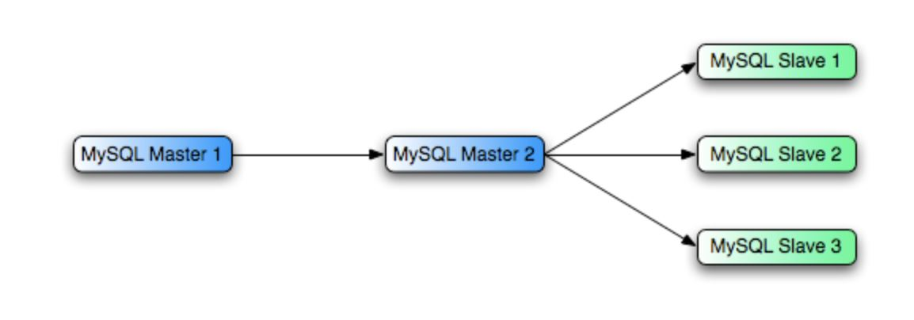
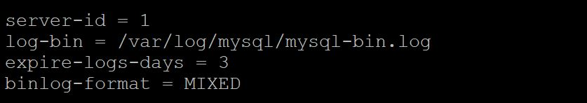
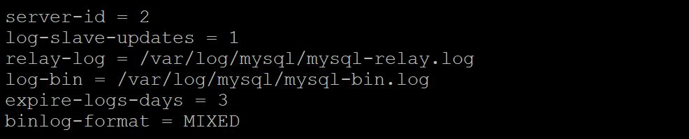
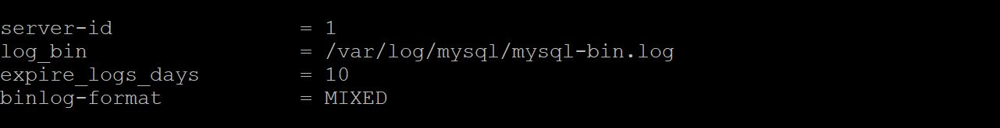
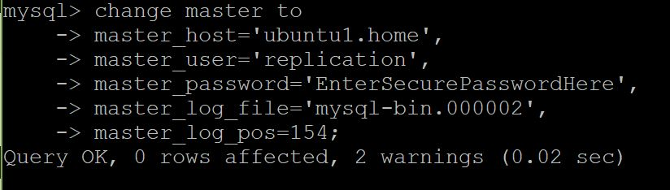
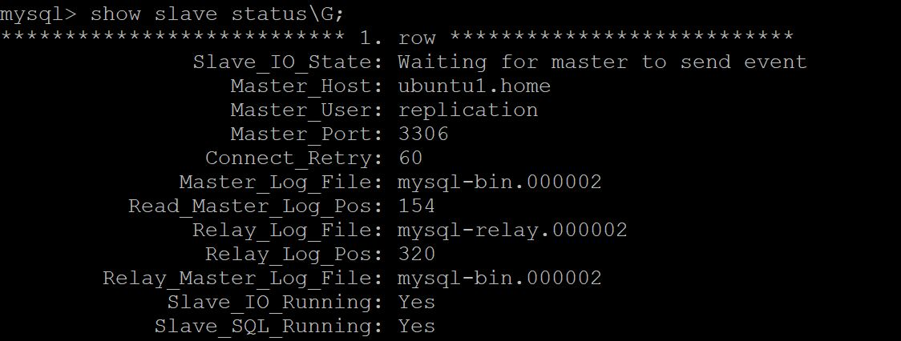

原文: How to Setup MySQL Master Master Replication by Andy Hayes。
MySQL 主-主 复制 (master master replication), 也叫做 mysql chained replication、multi master replication和mysql daisy chaining replication, 它是MySQL复制功能的扩展(普通复制功能见文章下半部分)，允许创建多个主服务器，并且主服务器可以绑定多个从服务器。
本文介绍设置主-主复制的方法。

在多主 mysql的配置中，除了第一个主服务器外。其它添加的主服务器既当作主也当作从。因此，可以将每个添加的从服务器变为主服务器。
看上面👆的图，可以比较直观的看出主主复制的配置。
在本教程中，我们使用三台服务器(实例)做例子；两个主一个从，但是首先会介绍为什么我们想要设置这种链式复制模式。
本文假定mysql其它的配置已经设置好了，我们只关注配置复制功能。
主-主复制应用的场景
- 数据库迁移
- 提升复制的性能
使用主-主复制帮助数据库迁移
我最近遇到了一个大数据库迁移项目，我们不得不迁移几百GB的数据到线上服务器。数据库位于两组数据库上，它们会被整合到一组数据库中。每次迁移都会在不同的日子进行。迁移之后，应用会被重新上线，宕机的时间要尽量的少。
备份和恢复数据库的常用方法包括 mysqldump或Percona Xtrabackup等工具。备份和恢复大的数据库是相当耗时的，尤其是使用mysqldump，所以我决定在每种情况下都让当前的数据库和新生产环境中的数据库保持同步。
使用多主提升同步的性能
系统架构师、应用架构师和数据库架构师使用MySQL数据库的一个主要原因就是可以水平的扩展数据库，使用一个或者多个从扩展读操作。
当每个从服务器连接到主时，它会在主服务器上产生额外的负载。每个从服务器必须接收二进制日志的完整副本。在有许多从服务器的环境中，这会增加主服务器上的网络负载，而主服务器开始成为瓶颈。此外，主服务器还不得不处理一部分请求，包括写入请求。
添加一个额外的主服务器作为从有助于分担主服务器的负载， 并且这种配置模型还可以自由扩展，以便可以创建多个次主服务器，所有这些次服务器都作为主服务器的从，具体配置取决于具体的需求。
配置概览
所有修改都会被持久化到my.cnf文件中并持久化，mysql实例会被重启。
主服务器 (primary)
- 开启 binary log
- 创建允许 secondary master server 连接的用户
主服务器 (secondary)
- 开启 binary log
- 开启 relay log
- 允许 log slave updates
- 创建允许slave连接的用户
- 指向 primary master log position
从服务器 (作为secondary master server的从)
- 允许 elay log
- 指向 secondary master log position
详细步骤
配置的改变
下面的截图显示了我在虚拟机中对my.cnf所做的改变。
主服务器的配置 (primary)

次主服务器的配置(secondary)

从服务器 (作为次主服务器的从)
与标准复制一样，binary log和relay logs通过log-bin和relay-log参数进行设置。配置中需要额外设置的是log-slave-updates,这个参数告诉次主服务器记录主服务器的改变到它的binary log中，这样从服务器才能读取到这些改变。
在主服务器上创建一个复制账号， 允许它的从使用这个账号可以连接
|
|
找到主服务器的日志文件和位置，应用到次主服务器上
|
|
|
|
完成之后执行下面的命令启动从复制：
|
|
检查次主服务器的同步状态：
|
|
如果复制正常，你会看到下面的几行：
|
|
在次主服务器和从服务器上执行步骤 2 和 3
步骤相同，依次增加账号、主地址、日志文件和位置。
测试
在主服务器做一个更新操作，比如创建一个数据库，检查这个更新操作是否应用到次主服务器和从上。
总结
mysql 主-主复制可以很好的提升复制的性能，或者在数据库迁移的时候执行数据库的同步。
更多的信息你可以看官方文档：16.3.6 Improving Replication Performance。
作者还了一系列关于mysql的文章，其中还介绍了如何配置主从模式，一并翻译，整合在这一篇文章中。
MySQL 主从配置
通常，可以配置MySQL复制实现规模扩展、方便提供报告或者提供MySQL数据库的备份。我以前写过一篇关于这个的文章。
整个过程依赖于二进制日志(binary log)，这些日志被输出到主服务器上的某个文件夹，从服务器读取这些日志并应用保持和主服务器的同步。
本文是一篇MySQL复制教程。我将设置MySQL复制功能，使用了两个MySQL服务器，一个主服务器和一个从服务器。本文假设服务器是新的，并且还没有在它们上创建数据库。
我不会列出所有可能的设置或配置。只是必要的复制设置。
需要对主服务器和从服务器的mysql配置文件进行更改。确保mysql配置文件中没有会导致任何网络问题的设置。关闭–skip-networking，并且确保–bind-address设置正确。
主服务器复制功能的基本配置
server-id：在配置中的每一个服务需要一个唯一的id, 起始1, 最大2^32。log-bin：二进制文件的前缀， 一般设置为“mysql-bin”, “bin-log” 等等。文件会写入到你指定的文件夹中，当然运行mysql的用户需要写入权限。expire-logs-days：二进制文件保留的最大天数。谨慎设置这个值，确保从服务器如果同步慢的话不会因为文件永久删除导致丢失数据。binlog-format：仔细阅读关于这个参数的官方文档，非常非常的重要。如果设置不正确则意味着你的从可能包含和主不一样的数据，可选的值为STATEMENT,ROW和MIXED。

配置完之后重启你的mysql服务，检查这些变量，看看文件夹下二进制文件是否存在。
从服务器复制功能的基本配置
server-id：在配置中的每一个服务需要一个唯一的id, 起始1, 最大2^32。relay-log：– 从会读取它自己的relay log, 并且应用复制过来的命令到它自己的数据库中。舍不设置它并不重要因为服务器自己会创建relay log，但是我总是显式设置它，这样我就能确保这些日志文件输出到哪里。当然需要确保运行mysql的账号要有写入这个文件夹的权限。
配置完之后重启你的mysql服务，检查这些变量是否已持久化。
对于其它一些有用的可选配置，检查官方的文档。
在主服务器上创建复制数据的账号
从需要认证才能连接到主上，你需要在主上创建一个账号，以便从使用这个账号连接主。
虽然你可以使用一个已存在的账号，但是实践上不建议你这么做，原因有二：
- 如果必须停用这个账号：使用这个账号的某人离开了公司或者某些应用的登录不再需要，这会导致复制中断。
- 权限：复制需要特定的操作权限，你应该创建你的mysql账号，仅仅授权给它这些特定功能的权限。
|
|
记录主机上二进制日志文件和位置
二进制日志文件的目的就是用来记录主上的改变，这些改变需要同样应用到从上。您需要找到主二进制日志的文件和位置(偏移)并将其记录下来，然后将其应用到从服务器。当从复制启动时，它需要知道在哪个日志文件中的哪个点开始读取主服务器数据库的副本并对其应用更新。
您应该阻止对主服务的任何更新，然后记录日志位置。使用一行命令很容易做到这一点：
|
|
保持这个连接窗口，新建一个到主的连接窗口，运行下面的命令得到位置：
|
|
你会看到当前主正在写的文件以及当前log的位置，这些信息会用来配置从：
|
|
使用主的信息配置从
连接到从，使用CHANGE_MASTER_TO配置从：
|
|

在从上，运行下面的命令：
|
|
解锁主并检查主从状态
在主上运行：
|
|
在从上运行：
|
|

检查看看是否有错误，确保你上面的设置设置正确。检查Master_Log_File 和 Read_Master_Log_Pos
|
|
测试
在主上创建一个空的数据库，确保从上也会创建这个空的数据库。
如果同步正常你可以准备在主上加载数据。
这是一个基本的mysql主从配置的教程。推荐你阅读官方文档了解mysql的主从复制的配置。